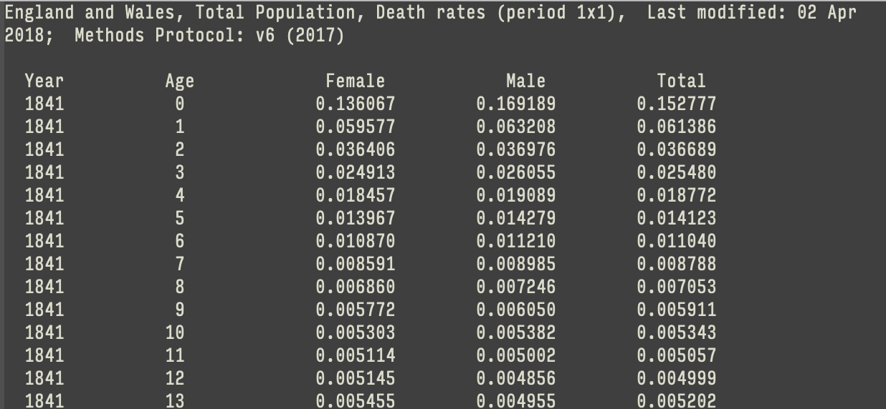
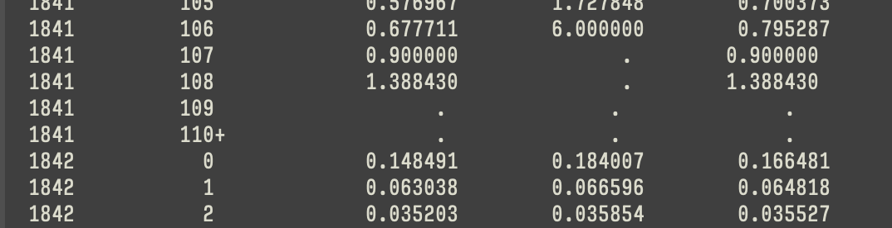

library(here) # manage file paths
library(socviz) # data and some useful functions
library(tidyverse) # your friend and mine
library(haven) # for Stata, SAS, and SPSS filesData Wrangling, Session 6
Code Horizons
January 2026
We’ve put a lot of pieces in place at this point
Including several things we haven’t fully exploited yet
read.csv()read_csv().here package, and here() function builds paths relative to the top level of your R project./Users/kjhealy/Documents/courses/data_wrangling
├── LICENSE
├── Makefile
├── README.md
├── README.qmd
├── _extensions
├── _freeze
├── _quarto.yml
├── _site
├── _targets
├── _targets.R
├── _variables.yml
├── avhrr
├── build
├── code
├── course_notes.qmd
├── data
├── data-raw
├── data_wrangling.Rproj
├── deploy.sh
├── extension_list.txt
├── fonts
├── index.html
├── index.qmd
├── pdf_slides
├── scratch.html
├── scratch.qmd
├── seas
├── site_libs
├── slides
└── testsdata folder, but I also want you to be able to load them. I’m writing this from somewhere deep in the slides folder, but you won’t be there. Also, I’m on a Mac, but you may not be.So:
# A tibble: 238 × 21
country year donors pop pop.dens gdp gdp.lag health health.lag pubhealth
<chr> <dbl> <dbl> <dbl> <dbl> <dbl> <dbl> <dbl> <dbl> <dbl>
1 Austra… NA NA 17065 0.220 16774 16591 1300 1224 4.8
2 Austra… 1991 12.1 17284 0.223 17171 16774 1379 1300 5.4
3 Austra… 1992 12.4 17495 0.226 17914 17171 1455 1379 5.4
4 Austra… 1993 12.5 17667 0.228 18883 17914 1540 1455 5.4
5 Austra… 1994 10.2 17855 0.231 19849 18883 1626 1540 5.4
6 Austra… 1995 10.2 18072 0.233 21079 19849 1737 1626 5.5
7 Austra… 1996 10.6 18311 0.237 21923 21079 1846 1737 5.6
8 Austra… 1997 10.3 18518 0.239 22961 21923 1948 1846 5.7
9 Austra… 1998 10.5 18711 0.242 24148 22961 2077 1948 5.9
10 Austra… 1999 8.67 18926 0.244 25445 24148 2231 2077 6.1
# ℹ 228 more rows
# ℹ 11 more variables: roads <dbl>, cerebvas <dbl>, assault <dbl>,
# external <dbl>, txp.pop <dbl>, world <chr>, opt <chr>, consent.law <chr>,
# consent.practice <chr>, consistent <chr>, ccode <chr>read_csv() comes in different varietiesread_csv() Field separator is a comma: ,read_csv2() Field separator is a semicolon: ;read_delim()read_tsv() Tab separated.read_fwf() Fixed-width files.read_log() Log files (i.e. computer log files).read_lines() Just read in lines, without trying to parse them.read_table() Data that’s separated by one (or more) columns of space.# A tibble: 238 × 21
country year donors pop pop.dens gdp gdp.lag health health.lag pubhealth
<chr> <dbl> <dbl> <dbl> <dbl> <dbl> <dbl> <dbl> <dbl> <dbl>
1 Austra… NA NA 17065 0.220 16774 16591 1300 1224 4.8
2 Austra… 1991 12.1 17284 0.223 17171 16774 1379 1300 5.4
3 Austra… 1992 12.4 17495 0.226 17914 17171 1455 1379 5.4
4 Austra… 1993 12.5 17667 0.228 18883 17914 1540 1455 5.4
5 Austra… 1994 10.2 17855 0.231 19849 18883 1626 1540 5.4
6 Austra… 1995 10.2 18072 0.233 21079 19849 1737 1626 5.5
7 Austra… 1996 10.6 18311 0.237 21923 21079 1846 1737 5.6
8 Austra… 1997 10.3 18518 0.239 22961 21923 1948 1846 5.7
9 Austra… 1998 10.5 18711 0.242 24148 22961 2077 1948 5.9
10 Austra… 1999 8.67 18926 0.244 25445 24148 2231 2077 6.1
# ℹ 228 more rows
# ℹ 11 more variables: roads <dbl>, cerebvas <dbl>, assault <dbl>,
# external <dbl>, txp.pop <dbl>, world <chr>, opt <chr>, consent.law <chr>,
# consent.practice <chr>, consistent <chr>, ccode <chr>read_table()

read_table()
# A tibble: 222 × 5
Year Age Female Male Total
<dbl> <chr> <dbl> <dbl> <dbl>
1 1841 0 0.136 0.169 0.153
2 1841 1 0.0596 0.0632 0.0614
3 1841 2 0.0364 0.0370 0.0367
4 1841 3 0.0249 0.0261 0.0255
5 1841 4 0.0185 0.0191 0.0188
6 1841 5 0.0140 0.0143 0.0141
7 1841 6 0.0109 0.0112 0.0110
8 1841 7 0.00859 0.00898 0.00879
9 1841 8 0.00686 0.00725 0.00705
10 1841 9 0.00577 0.00605 0.00591
# ℹ 212 more rows
── Column specification ────────────────────────────────────────────────────────
cols(
Year = col_double(),
Age = col_character(),
Female = col_double(),
Male = col_double(),
Total = col_double()
)age imported in character format?read_ functions try to guess what the type of each column is. They do this by looking at the first thousand rows of each column. They may guess incorrectly!# A tibble: 222 × 5
Year Age Female Male Total
<dbl> <chr> <dbl> <dbl> <dbl>
1 1841 0 0.136 0.169 0.153
2 1841 1 0.0596 0.0632 0.0614
3 1841 2 0.0364 0.0370 0.0367
4 1841 3 0.0249 0.0261 0.0255
5 1841 4 0.0185 0.0191 0.0188
6 1841 5 0.0140 0.0143 0.0141
7 1841 6 0.0109 0.0112 0.0110
8 1841 7 0.00859 0.00898 0.00879
9 1841 8 0.00686 0.00725 0.00705
10 1841 9 0.00577 0.00605 0.00591
# ℹ 212 more rows# A tibble: 222 × 5
year age female male total
<dbl> <chr> <dbl> <dbl> <dbl>
1 1841 0 0.136 0.169 0.153
2 1841 1 0.0596 0.0632 0.0614
3 1841 2 0.0364 0.0370 0.0367
4 1841 3 0.0249 0.0261 0.0255
5 1841 4 0.0185 0.0191 0.0188
6 1841 5 0.0140 0.0143 0.0141
7 1841 6 0.0109 0.0112 0.0110
8 1841 7 0.00859 0.00898 0.00879
9 1841 8 0.00686 0.00725 0.00705
10 1841 9 0.00577 0.00605 0.00591
# ℹ 212 more rows# A tibble: 222 × 5
year age female male total
<dbl> <int> <dbl> <dbl> <dbl>
1 1841 0 0.136 0.169 0.153
2 1841 1 0.0596 0.0632 0.0614
3 1841 2 0.0364 0.0370 0.0367
4 1841 3 0.0249 0.0261 0.0255
5 1841 4 0.0185 0.0191 0.0188
6 1841 5 0.0140 0.0143 0.0141
7 1841 6 0.0109 0.0112 0.0110
8 1841 7 0.00859 0.00898 0.00879
9 1841 8 0.00686 0.00725 0.00705
10 1841 9 0.00577 0.00605 0.00591
# ℹ 212 more rowsjanitor package is very handy!
── Column specification ────────────────────────────────────────────────────────
cols(
`Data As Of` = col_character(),
`Start Date` = col_character(),
`End Date` = col_character(),
Group = col_character(),
Year = col_logical(),
Month = col_logical(),
State = col_character(),
Sex = col_character(),
`Age Group` = col_character(),
`COVID-19 Deaths` = col_double(),
`Total Deaths` = col_double(),
`Pneumonia Deaths` = col_double(),
`Pneumonia and COVID-19 Deaths` = col_double(),
`Influenza Deaths` = col_double(),
`Pneumonia, Influenza, or COVID-19 Deaths` = col_double(),
Footnote = col_character()
)Warning: 88128 parsing failures.
row col expected actual file
2755 Year 1/0/T/F/TRUE/FALSE 2020 '/Users/kjhealy/Documents/courses/data_wrangling/data/SAS_on_2021-04-13.csv'
2756 Year 1/0/T/F/TRUE/FALSE 2020 '/Users/kjhealy/Documents/courses/data_wrangling/data/SAS_on_2021-04-13.csv'
2757 Year 1/0/T/F/TRUE/FALSE 2020 '/Users/kjhealy/Documents/courses/data_wrangling/data/SAS_on_2021-04-13.csv'
2758 Year 1/0/T/F/TRUE/FALSE 2020 '/Users/kjhealy/Documents/courses/data_wrangling/data/SAS_on_2021-04-13.csv'
2759 Year 1/0/T/F/TRUE/FALSE 2020 '/Users/kjhealy/Documents/courses/data_wrangling/data/SAS_on_2021-04-13.csv'
.... .... .................. ...... ............................................................................
See problems(...) for more details.# A tibble: 88,128 × 5
row col expected actual file
<int> <chr> <chr> <chr> <chr>
1 2755 Year 1/0/T/F/TRUE/FALSE 2020 '/Users/kjhealy/Documents/courses/data…
2 2756 Year 1/0/T/F/TRUE/FALSE 2020 '/Users/kjhealy/Documents/courses/data…
3 2757 Year 1/0/T/F/TRUE/FALSE 2020 '/Users/kjhealy/Documents/courses/data…
4 2758 Year 1/0/T/F/TRUE/FALSE 2020 '/Users/kjhealy/Documents/courses/data…
5 2759 Year 1/0/T/F/TRUE/FALSE 2020 '/Users/kjhealy/Documents/courses/data…
6 2760 Year 1/0/T/F/TRUE/FALSE 2020 '/Users/kjhealy/Documents/courses/data…
7 2761 Year 1/0/T/F/TRUE/FALSE 2020 '/Users/kjhealy/Documents/courses/data…
8 2762 Year 1/0/T/F/TRUE/FALSE 2020 '/Users/kjhealy/Documents/courses/data…
9 2763 Year 1/0/T/F/TRUE/FALSE 2020 '/Users/kjhealy/Documents/courses/data…
10 2764 Year 1/0/T/F/TRUE/FALSE 2020 '/Users/kjhealy/Documents/courses/data…
# ℹ 88,118 more rows# A tibble: 88,128 × 5
row col expected actual file
<int> <chr> <chr> <chr> <chr>
1 2755 Year 1/0/T/F/TRUE/FALSE 2020 '/Users/kjhealy/Documents/courses/data…
2 2756 Year 1/0/T/F/TRUE/FALSE 2020 '/Users/kjhealy/Documents/courses/data…
3 2757 Year 1/0/T/F/TRUE/FALSE 2020 '/Users/kjhealy/Documents/courses/data…
4 2758 Year 1/0/T/F/TRUE/FALSE 2020 '/Users/kjhealy/Documents/courses/data…
5 2759 Year 1/0/T/F/TRUE/FALSE 2020 '/Users/kjhealy/Documents/courses/data…
6 2760 Year 1/0/T/F/TRUE/FALSE 2020 '/Users/kjhealy/Documents/courses/data…
7 2761 Year 1/0/T/F/TRUE/FALSE 2020 '/Users/kjhealy/Documents/courses/data…
8 2762 Year 1/0/T/F/TRUE/FALSE 2020 '/Users/kjhealy/Documents/courses/data…
9 2763 Year 1/0/T/F/TRUE/FALSE 2020 '/Users/kjhealy/Documents/courses/data…
10 2764 Year 1/0/T/F/TRUE/FALSE 2020 '/Users/kjhealy/Documents/courses/data…
# ℹ 88,118 more rowsnchs object, so we can revisit them.head()# A tibble: 6 × 16
`Data As Of` `Start Date` `End Date` Group Year Month State Sex `Age Group`
<chr> <chr> <chr> <chr> <lgl> <lgl> <chr> <chr> <chr>
1 04/07/2021 01/01/2020 04/03/2021 By T… NA NA Unit… All … All Ages
2 04/07/2021 01/01/2020 04/03/2021 By T… NA NA Unit… All … Under 1 ye…
3 04/07/2021 01/01/2020 04/03/2021 By T… NA NA Unit… All … 0-17 years
4 04/07/2021 01/01/2020 04/03/2021 By T… NA NA Unit… All … 1-4 years
5 04/07/2021 01/01/2020 04/03/2021 By T… NA NA Unit… All … 5-14 years
6 04/07/2021 01/01/2020 04/03/2021 By T… NA NA Unit… All … 15-24 years
# ℹ 7 more variables: `COVID-19 Deaths` <dbl>, `Total Deaths` <dbl>,
# `Pneumonia Deaths` <dbl>, `Pneumonia and COVID-19 Deaths` <dbl>,
# `Influenza Deaths` <dbl>, `Pneumonia, Influenza, or COVID-19 Deaths` <dbl>,
# Footnote <chr>tail()# A tibble: 6 × 16
`Data As Of` `Start Date` `End Date` Group Year Month State Sex `Age Group`
<chr> <chr> <chr> <chr> <lgl> <lgl> <chr> <chr> <chr>
1 04/07/2021 04/01/2021 04/03/2021 By M… NA NA Puer… Fema… 45-54 years
2 04/07/2021 04/01/2021 04/03/2021 By M… NA NA Puer… Fema… 50-64 years
3 04/07/2021 04/01/2021 04/03/2021 By M… NA NA Puer… Fema… 55-64 years
4 04/07/2021 04/01/2021 04/03/2021 By M… NA NA Puer… Fema… 65-74 years
5 04/07/2021 04/01/2021 04/03/2021 By M… NA NA Puer… Fema… 75-84 years
6 04/07/2021 04/01/2021 04/03/2021 By M… NA NA Puer… Fema… 85 years a…
# ℹ 7 more variables: `COVID-19 Deaths` <dbl>, `Total Deaths` <dbl>,
# `Pneumonia Deaths` <dbl>, `Pneumonia and COVID-19 Deaths` <dbl>,
# `Influenza Deaths` <dbl>, `Pneumonia, Influenza, or COVID-19 Deaths` <dbl>,
# Footnote <chr>slice_sample()# A tibble: 10 × 16
`Data As Of` `Start Date` `End Date` Group Year Month State Sex
<chr> <chr> <chr> <chr> <lgl> <lgl> <chr> <chr>
1 04/07/2021 04/01/2020 04/30/2020 By Month NA NA Virginia Male
2 04/07/2021 01/01/2020 01/31/2020 By Month NA TRUE Oregon Fema…
3 04/07/2021 01/01/2020 01/31/2020 By Month NA TRUE South Caroli… Male
4 04/07/2021 09/01/2020 09/30/2020 By Month NA NA Pennsylvania All …
5 04/07/2021 01/01/2021 04/03/2021 By Year NA NA Louisiana Male
6 04/07/2021 01/01/2020 12/31/2020 By Year NA NA North Caroli… All …
7 04/07/2021 05/01/2020 05/31/2020 By Month NA NA Alabama Male
8 04/07/2021 01/01/2021 04/03/2021 By Year NA NA Massachusetts Fema…
9 04/07/2021 04/01/2021 04/03/2021 By Month NA NA Connecticut Fema…
10 04/07/2021 02/01/2020 02/29/2020 By Month NA NA Oregon All …
# ℹ 8 more variables: `Age Group` <chr>, `COVID-19 Deaths` <dbl>,
# `Total Deaths` <dbl>, `Pneumonia Deaths` <dbl>,
# `Pneumonia and COVID-19 Deaths` <dbl>, `Influenza Deaths` <dbl>,
# `Pneumonia, Influenza, or COVID-19 Deaths` <dbl>, Footnote <chr>slice()read_csv() complained about.# A tibble: 11 × 16
`Data As Of` `Start Date` `End Date` Group Year Month State Sex
<chr> <chr> <chr> <chr> <lgl> <lgl> <chr> <chr>
1 04/07/2021 01/01/2020 04/03/2021 By Total NA NA Puerto Rico Fema…
2 04/07/2021 01/01/2020 04/03/2021 By Total NA NA Puerto Rico Fema…
3 04/07/2021 01/01/2020 04/03/2021 By Total NA NA Puerto Rico Fema…
4 04/07/2021 01/01/2020 04/03/2021 By Total NA NA Puerto Rico Fema…
5 04/07/2021 01/01/2020 04/03/2021 By Total NA NA Puerto Rico Fema…
6 04/07/2021 01/01/2020 12/31/2020 By Year NA NA United States All …
7 04/07/2021 01/01/2020 12/31/2020 By Year NA NA United States All …
8 04/07/2021 01/01/2020 12/31/2020 By Year NA NA United States All …
9 04/07/2021 01/01/2020 12/31/2020 By Year NA NA United States All …
10 04/07/2021 01/01/2020 12/31/2020 By Year NA NA United States All …
11 04/07/2021 01/01/2020 12/31/2020 By Year NA NA United States All …
# ℹ 8 more variables: `Age Group` <chr>, `COVID-19 Deaths` <dbl>,
# `Total Deaths` <dbl>, `Pneumonia Deaths` <dbl>,
# `Pneumonia and COVID-19 Deaths` <dbl>, `Influenza Deaths` <dbl>,
# `Pneumonia, Influenza, or COVID-19 Deaths` <dbl>, Footnote <chr>slice()# A tibble: 11 × 3
Year Month State
<lgl> <lgl> <chr>
1 NA NA Puerto Rico
2 NA NA Puerto Rico
3 NA NA Puerto Rico
4 NA NA Puerto Rico
5 NA NA Puerto Rico
6 NA NA United States
7 NA NA United States
8 NA NA United States
9 NA NA United States
10 NA NA United States
11 NA NA United Statesselect() & filter()# A tibble: 969 × 3
Year Month State
<lgl> <lgl> <chr>
1 NA NA New York
2 NA NA New York
3 NA NA New York
4 NA NA New York
5 NA NA New York
6 NA NA New York
7 NA NA New York
8 NA NA New York
9 NA NA New York
10 NA NA New York
# ℹ 959 more rowsis.na()# A tibble: 0 × 3
# ℹ 3 variables: Year <lgl>, Month <lgl>, State <chr>distinct()read_lines() [1] "Data As Of,Start Date,End Date,Group,Year,Month,State,Sex,Age Group,COVID-19 Deaths,Total Deaths,Pneumonia Deaths,Pneumonia and COVID-19 Deaths,Influenza Deaths,\"Pneumonia, Influenza, or COVID-19 Deaths\",Footnote"
[2] "04/07/2021,01/01/2020,04/03/2021,By Total,,,United States,All Sexes,All Ages,539723,4161167,466437,263147,9037,750804,"
[3] "04/07/2021,01/01/2020,04/03/2021,By Total,,,United States,All Sexes,Under 1 year,59,22626,246,10,21,316,"
[4] "04/07/2021,01/01/2020,04/03/2021,By Total,,,United States,All Sexes,0-17 years,251,39620,667,46,179,1051,"
[5] "04/07/2021,01/01/2020,04/03/2021,By Total,,,United States,All Sexes,1-4 years,31,4069,137,5,61,224,"
[6] "04/07/2021,01/01/2020,04/03/2021,By Total,,,United States,All Sexes,5-14 years,89,6578,195,19,76,341,"
[7] "04/07/2021,01/01/2020,04/03/2021,By Total,,,United States,All Sexes,15-24 years,804,42596,930,317,81,1493,"
[8] "04/07/2021,01/01/2020,04/03/2021,By Total,,,United States,All Sexes,18-29 years,1996,75339,2184,884,150,3434,"
[9] "04/07/2021,01/01/2020,04/03/2021,By Total,,,United States,All Sexes,25-34 years,3543,88196,3493,1617,237,5638,"
[10] "04/07/2021,01/01/2020,04/03/2021,By Total,,,United States,All Sexes,30-39 years,5792,107348,5276,2658,318,8706," [1] "04/07/2021,01/01/2020,04/03/2021,By Total,,,Puerto Rico,Female,65-74 years,203,2650,410,151,,466,One or more data cells have counts between 1-9 and have been suppressed in accordance with NCHS confidentiality standards."
[2] "04/07/2021,01/01/2020,04/03/2021,By Total,,,Puerto Rico,Female,75-84 years,234,4274,656,154,16,751,"
[3] "04/07/2021,01/01/2020,04/03/2021,By Total,,,Puerto Rico,Female,85 years and over,222,6164,795,136,29,909,"
[4] "04/07/2021,01/01/2020,12/31/2020,By Year,2020,,United States,All Sexes,All Ages,380949,3372967,349667,178222,8779,560025,"
[5] "04/07/2021,01/01/2020,12/31/2020,By Year,2020,,United States,All Sexes,Under 1 year,48,19356,224,9,21,284,"
[6] "04/07/2021,01/01/2020,12/31/2020,By Year,2020,,United States,All Sexes,0-17 years,189,33808,598,35,178,930," There you are, you bastard.
In this case, this is due to the kind of data this is, mixing multiple reporting levels and totals. That is, it’s not a mistake in the data, but rather in the parsing.
── Column specification ────────────────────────────────────────────────────────
cols(
`Data As Of` = col_character(),
`Start Date` = col_character(),
`End Date` = col_character(),
Group = col_character(),
Year = col_logical(),
Month = col_logical(),
State = col_character(),
Sex = col_character(),
`Age Group` = col_character(),
`COVID-19 Deaths` = col_double(),
`Total Deaths` = col_double(),
`Pneumonia Deaths` = col_double(),
`Pneumonia and COVID-19 Deaths` = col_double(),
`Influenza Deaths` = col_double(),
`Pneumonia, Influenza, or COVID-19 Deaths` = col_double(),
Footnote = col_character()
)nchs <- with_edition(1, read_csv(here("data", "SAS_on_2021-04-13.csv"),
col_types = cols(
`Data As Of` = col_character(),
`Start Date` = col_character(),
`End Date` = col_character(),
Group = col_character(),
Year = col_logical(),
Month = col_logical(),
State = col_character(),
Sex = col_character(),
`Age Group` = col_character(),
`COVID-19 Deaths` = col_double(),
`Total Deaths` = col_double(),
`Pneumonia Deaths` = col_double(),
`Pneumonia and COVID-19 Deaths` = col_double(),
`Influenza Deaths` = col_double(),
`Pneumonia, Influenza, or COVID-19 Deaths` = col_double(),
Footnote = col_character()
)))# Date format
us_style <- "%m/%d/%Y"
nchs <- with_edition(1, read_csv(
here("data", "SAS_on_2021-04-13.csv"),
col_types = cols(
`Data As Of` = col_date(format = us_style),
`Start Date` = col_date(format = us_style),
`End Date` = col_date(format = us_style),
Group = col_character(),
Year = col_character(),
Month = col_character(),
State = col_character(),
Sex = col_character(),
`Age Group` = col_character(),
`COVID-19 Deaths` = col_integer(),
`Total Deaths` = col_integer(),
`Pneumonia Deaths` = col_integer(),
`Pneumonia and COVID-19 Deaths` = col_integer(),
`Influenza Deaths` = col_integer(),
`Pneumonia, Influenza, or COVID-19 Deaths` = col_integer(),
Footnote = col_character()
)) |>
janitor::clean_names() |>
select(-footnote) |>
mutate(age_group = str_to_sentence(age_group)) |>
filter(!str_detect(state, "Total"))
)[1] 52326 15# A tibble: 49,572 × 3
year month state
<chr> <chr> <chr>
1 2020 <NA> United States
2 2020 <NA> United States
3 2020 <NA> United States
4 2020 <NA> United States
5 2020 <NA> United States
6 2020 <NA> United States
7 2020 <NA> United States
8 2020 <NA> United States
9 2020 <NA> United States
10 2020 <NA> United States
# ℹ 49,562 more rowsread_csv() warns you of a parsing failure, don’t ignore it.read_lines() lets you get the file in a nearly unprocessed form.colspec output is your friend.# A tibble: 52,326 × 15
data_as_of start_date end_date group year month state sex age_group
<date> <date> <date> <chr> <chr> <chr> <chr> <chr> <chr>
1 2021-04-07 2020-01-01 2021-04-03 By Total <NA> <NA> United… All … All ages
2 2021-04-07 2020-01-01 2021-04-03 By Total <NA> <NA> United… All … Under 1 …
3 2021-04-07 2020-01-01 2021-04-03 By Total <NA> <NA> United… All … 0-17 yea…
4 2021-04-07 2020-01-01 2021-04-03 By Total <NA> <NA> United… All … 1-4 years
5 2021-04-07 2020-01-01 2021-04-03 By Total <NA> <NA> United… All … 5-14 yea…
6 2021-04-07 2020-01-01 2021-04-03 By Total <NA> <NA> United… All … 15-24 ye…
7 2021-04-07 2020-01-01 2021-04-03 By Total <NA> <NA> United… All … 18-29 ye…
8 2021-04-07 2020-01-01 2021-04-03 By Total <NA> <NA> United… All … 25-34 ye…
9 2021-04-07 2020-01-01 2021-04-03 By Total <NA> <NA> United… All … 30-39 ye…
10 2021-04-07 2020-01-01 2021-04-03 By Total <NA> <NA> United… All … 35-44 ye…
# ℹ 52,316 more rows
# ℹ 6 more variables: covid_19_deaths <int>, total_deaths <int>,
# pneumonia_deaths <int>, pneumonia_and_covid_19_deaths <int>,
# influenza_deaths <int>, pneumonia_influenza_or_covid_19_deaths <int># A tibble: 52,326 × 10
group state sex age_group covid_19_deaths total_deaths pneumonia_deaths
<chr> <chr> <chr> <chr> <int> <int> <int>
1 By Total Unite… All … All ages 539723 4161167 466437
2 By Total Unite… All … Under 1 … 59 22626 246
3 By Total Unite… All … 0-17 yea… 251 39620 667
4 By Total Unite… All … 1-4 years 31 4069 137
5 By Total Unite… All … 5-14 yea… 89 6578 195
6 By Total Unite… All … 15-24 ye… 804 42596 930
7 By Total Unite… All … 18-29 ye… 1996 75339 2184
8 By Total Unite… All … 25-34 ye… 3543 88196 3493
9 By Total Unite… All … 30-39 ye… 5792 107348 5276
10 By Total Unite… All … 35-44 ye… 9259 126848 8203
# ℹ 52,316 more rows
# ℹ 3 more variables: pneumonia_and_covid_19_deaths <int>,
# influenza_deaths <int>, pneumonia_influenza_or_covid_19_deaths <int># A tibble: 313,956 × 6
group state sex age_group outcome n
<chr> <chr> <chr> <chr> <chr> <int>
1 By Total United States All Sexes All ages covid_19_deaths 5.40e5
2 By Total United States All Sexes All ages total_deaths 4.16e6
3 By Total United States All Sexes All ages pneumonia_deaths 4.66e5
4 By Total United States All Sexes All ages pneumonia_and_covid_19_… 2.63e5
5 By Total United States All Sexes All ages influenza_deaths 9.04e3
6 By Total United States All Sexes All ages pneumonia_influenza_or_… 7.51e5
7 By Total United States All Sexes Under 1 year covid_19_deaths 5.9 e1
8 By Total United States All Sexes Under 1 year total_deaths 2.26e4
9 By Total United States All Sexes Under 1 year pneumonia_deaths 2.46e2
10 By Total United States All Sexes Under 1 year pneumonia_and_covid_19_… 1 e1
# ℹ 313,946 more rowslibrary(stringr) # it's back!
nchs |>
select(!(c(data_as_of:end_date, year, month))) |>
pivot_longer(covid_19_deaths:pneumonia_influenza_or_covid_19_deaths,
names_to = "outcome",
values_to = "n") |>
mutate(outcome = str_to_sentence(outcome),
outcome = str_replace_all(outcome, "_", " "),
outcome = str_replace(outcome, "(C|c)ovid 19", "COVID-19"))# A tibble: 313,956 × 6
group state sex age_group outcome n
<chr> <chr> <chr> <chr> <chr> <int>
1 By Total United States All Sexes All ages COVID-19 deaths 5.40e5
2 By Total United States All Sexes All ages Total deaths 4.16e6
3 By Total United States All Sexes All ages Pneumonia deaths 4.66e5
4 By Total United States All Sexes All ages Pneumonia and COVID-19 … 2.63e5
5 By Total United States All Sexes All ages Influenza deaths 9.04e3
6 By Total United States All Sexes All ages Pneumonia influenza or … 7.51e5
7 By Total United States All Sexes Under 1 year COVID-19 deaths 5.9 e1
8 By Total United States All Sexes Under 1 year Total deaths 2.26e4
9 By Total United States All Sexes Under 1 year Pneumonia deaths 2.46e2
10 By Total United States All Sexes Under 1 year Pneumonia and COVID-19 … 1 e1
# ℹ 313,946 more rowsnchs_fmt# A tibble: 313,956 × 4
state age_group outcome n
<chr> <chr> <chr> <int>
1 United States All ages COVID-19 deaths 539723
2 United States All ages Total deaths 4161167
3 United States All ages Pneumonia deaths 466437
4 United States All ages Pneumonia and COVID-19 deaths 263147
5 United States All ages Influenza deaths 9037
6 United States All ages Pneumonia influenza or COVID-19 deaths 750804
7 United States Under 1 year COVID-19 deaths 59
8 United States Under 1 year Total deaths 22626
9 United States Under 1 year Pneumonia deaths 246
10 United States Under 1 year Pneumonia and COVID-19 deaths 10
# ℹ 313,946 more rows# A tibble: 17 × 1
age_group
<chr>
1 All ages
2 Under 1 year
3 0-17 years
4 1-4 years
5 5-14 years
6 15-24 years
7 18-29 years
8 25-34 years
9 30-39 years
10 35-44 years
11 40-49 years
12 45-54 years
13 50-64 years
14 55-64 years
15 65-74 years
16 75-84 years
17 85 years and overp_out <- nchs_fmt |>
filter(group %in% "By Total",
sex %in% "All Sexes",
state %in% "United States",
age_group %in% c("0-17 years",
"18-29 years",
"30-39 years",
"40-49 years",
"50-64 years",
"65-74 years",
"85 years and over"),
outcome %in% "COVID-19 deaths") |>
mutate(age_group = str_replace(age_group, "years", "yrs"),
age_group = str_replace(age_group, " and over", ""),
age_group = str_replace(age_group, "85", "85+")) |>
ggplot(mapping = aes(x = n, y = age_group)) +
geom_col() + scale_x_continuous(labels = scales::comma) +
labs(x = "Deaths", y = NULL, title = "U.S. COVID-19 mortality totals by age group")Every dataset is different
# A tibble: 23 × 5
SEGMENT DESCRIPTION R F M
<chr> <chr> <chr> <chr> <chr>
1 <NA> <NA> <NA> <NA> <NA>
2 Champions Bought recently, buy often and spend th… 4– 5 4– 5 4– 5
3 <NA> <NA> <NA> <NA> <NA>
4 Loyal Customers Spend good money. Responsive to promoti… 2– 5 3– 5 3– 5
5 <NA> <NA> <NA> <NA> <NA>
6 Potential Loyalist Recent customers, spent good amount, bo… 3– 5 1– 3 1– 3
7 <NA> <NA> <NA> <NA> <NA>
8 New Customers Bought more recently, but not often 4– 5 <= 1 <= 1
9 <NA> <NA> <NA> <NA> <NA>
10 Promising Recent shoppers, but haven’t spent much 3– 4 <= 1 <= 1
# ℹ 13 more rows# A tibble: 23 × 5
segment description r f m
<chr> <chr> <chr> <chr> <chr>
1 <NA> <NA> <NA> <NA> <NA>
2 Champions Bought recently, buy often and spend th… 4– 5 4– 5 4– 5
3 <NA> <NA> <NA> <NA> <NA>
4 Loyal Customers Spend good money. Responsive to promoti… 2– 5 3– 5 3– 5
5 <NA> <NA> <NA> <NA> <NA>
6 Potential Loyalist Recent customers, spent good amount, bo… 3– 5 1– 3 1– 3
7 <NA> <NA> <NA> <NA> <NA>
8 New Customers Bought more recently, but not often 4– 5 <= 1 <= 1
9 <NA> <NA> <NA> <NA> <NA>
10 Promising Recent shoppers, but haven’t spent much 3– 4 <= 1 <= 1
# ℹ 13 more rows# A tibble: 11 × 5
segment description r f m
<chr> <chr> <chr> <chr> <chr>
1 Champions Bought recently, buy often and spend th… 4– 5 4– 5 4– 5
2 Loyal Customers Spend good money. Responsive to promoti… 2– 5 3– 5 3– 5
3 Potential Loyalist Recent customers, spent good amount, bo… 3– 5 1– 3 1– 3
4 New Customers Bought more recently, but not often 4– 5 <= 1 <= 1
5 Promising Recent shoppers, but haven’t spent much 3– 4 <= 1 <= 1
6 Need Attention Above average recency, frequency & mone… 2– 3 2– 3 2– 3
7 About To Sleep Below average recency, frequency & mone… 2– 3 <= 2 <= 2
8 At Risk Spent big money, purchased often but lo… <= 2 2– 5 2– 5
9 Can’t Lose Them Made big purchases and often, but long … <= 1 4– 5 4– 5
10 Hibernating Low spenders, low frequency, purchased … 1– 2 1– 2 1– 2
11 Lost Lowest recency, frequency & monetary sc… <= 2 <= 2 <= 2 # A tibble: 33 × 4
segment description name value
<chr> <chr> <chr> <chr>
1 Champions Bought recently, buy often and spend the most r 4– 5
2 Champions Bought recently, buy often and spend the most f 4– 5
3 Champions Bought recently, buy often and spend the most m 4– 5
4 Loyal Customers Spend good money. Responsive to promotions r 2– 5
5 Loyal Customers Spend good money. Responsive to promotions f 3– 5
6 Loyal Customers Spend good money. Responsive to promotions m 3– 5
7 Potential Loyalist Recent customers, spent good amount, bought m… r 3– 5
8 Potential Loyalist Recent customers, spent good amount, bought m… f 1– 3
9 Potential Loyalist Recent customers, spent good amount, bought m… m 1– 3
10 New Customers Bought more recently, but not often r 4– 5
# ℹ 23 more rows# A tibble: 33 × 6
segment description name value lo hi
<chr> <chr> <chr> <chr> <int> <int>
1 Champions Bought recently, buy often and sp… r 4– 5 4 5
2 Champions Bought recently, buy often and sp… f 4– 5 4 5
3 Champions Bought recently, buy often and sp… m 4– 5 4 5
4 Loyal Customers Spend good money. Responsive to p… r 2– 5 2 5
5 Loyal Customers Spend good money. Responsive to p… f 3– 5 3 5
6 Loyal Customers Spend good money. Responsive to p… m 3– 5 3 5
7 Potential Loyalist Recent customers, spent good amou… r 3– 5 3 5
8 Potential Loyalist Recent customers, spent good amou… f 1– 3 1 3
9 Potential Loyalist Recent customers, spent good amou… m 1– 3 1 3
10 New Customers Bought more recently, but not oft… r 4– 5 4 5
# ℹ 23 more rows# A tibble: 33 × 5
segment description name lo hi
<chr> <chr> <chr> <int> <int>
1 Champions Bought recently, buy often and spend th… r 4 5
2 Champions Bought recently, buy often and spend th… f 4 5
3 Champions Bought recently, buy often and spend th… m 4 5
4 Loyal Customers Spend good money. Responsive to promoti… r 2 5
5 Loyal Customers Spend good money. Responsive to promoti… f 3 5
6 Loyal Customers Spend good money. Responsive to promoti… m 3 5
7 Potential Loyalist Recent customers, spent good amount, bo… r 3 5
8 Potential Loyalist Recent customers, spent good amount, bo… f 1 3
9 Potential Loyalist Recent customers, spent good amount, bo… m 1 3
10 New Customers Bought more recently, but not often r 4 5
# ℹ 23 more rows# A tibble: 11 × 8
segment description lo_r lo_f lo_m hi_r hi_f hi_m
<chr> <chr> <int> <int> <int> <int> <int> <int>
1 Champions Bought recently, buy … 4 4 4 5 5 5
2 Loyal Customers Spend good money. Res… 2 3 3 5 5 5
3 Potential Loyalist Recent customers, spe… 3 1 1 5 3 3
4 New Customers Bought more recently,… 4 NA NA 5 1 1
5 Promising Recent shoppers, but … 3 NA NA 4 1 1
6 Need Attention Above average recency… 2 2 2 3 3 3
7 About To Sleep Below average recency… 2 NA NA 3 2 2
8 At Risk Spent big money, purc… NA 2 2 2 5 5
9 Can’t Lose Them Made big purchases an… NA 4 4 1 5 5
10 Hibernating Low spenders, low fre… 1 1 1 2 2 2
11 Lost Lowest recency, frequ… NA NA NA 2 2 2read_csv(here("data", "rfm_table.csv")) |>
janitor::clean_names() |>
janitor::remove_empty("rows") |>
pivot_longer(cols = r:m) |>
separate(col = value, into = c("lo", "hi"),
remove = FALSE, convert = TRUE,
fill = "left") |>
select(-value) |>
pivot_wider(names_from = name,
values_from = lo:hi) |>
mutate(across(where(is.integer), \(x) replace_na(x, 0)))# A tibble: 11 × 8
segment description lo_r lo_f lo_m hi_r hi_f hi_m
<chr> <chr> <int> <int> <int> <int> <int> <int>
1 Champions Bought recently, buy … 4 4 4 5 5 5
2 Loyal Customers Spend good money. Res… 2 3 3 5 5 5
3 Potential Loyalist Recent customers, spe… 3 1 1 5 3 3
4 New Customers Bought more recently,… 4 0 0 5 1 1
5 Promising Recent shoppers, but … 3 0 0 4 1 1
6 Need Attention Above average recency… 2 2 2 3 3 3
7 About To Sleep Below average recency… 2 0 0 3 2 2
8 At Risk Spent big money, purc… 0 2 2 2 5 5
9 Can’t Lose Them Made big purchases an… 0 4 4 1 5 5
10 Hibernating Low spenders, low fre… 1 1 1 2 2 2
11 Lost Lowest recency, frequ… 0 0 0 2 2 2read_csv(here("data", "rfm_table.csv")) |>
janitor::clean_names() |>
janitor::remove_empty("rows") |>
pivot_longer(cols = r:m) |>
separate(col = value, into = c("lo", "hi"),
remove = FALSE, convert = TRUE,
fill = "left") |>
select(-value) |>
pivot_wider(names_from = name,
values_from = lo:hi) |>
mutate(across(where(is.integer), \(x) replace_na(x, 0))) |>
select(segment,
lo_r, hi_r,
lo_f, hi_f,
lo_m, hi_m,
description)# A tibble: 11 × 8
segment lo_r hi_r lo_f hi_f lo_m hi_m description
<chr> <int> <int> <int> <int> <int> <int> <chr>
1 Champions 4 5 4 5 4 5 Bought recently, buy …
2 Loyal Customers 2 5 3 5 3 5 Spend good money. Res…
3 Potential Loyalist 3 5 1 3 1 3 Recent customers, spe…
4 New Customers 4 5 0 1 0 1 Bought more recently,…
5 Promising 3 4 0 1 0 1 Recent shoppers, but …
6 Need Attention 2 3 2 3 2 3 Above average recency…
7 About To Sleep 2 3 0 2 0 2 Below average recency…
8 At Risk 0 2 2 5 2 5 Spent big money, purc…
9 Can’t Lose Them 0 1 4 5 4 5 Made big purchases an…
10 Hibernating 1 2 1 2 1 2 Low spenders, low fre…
11 Lost 0 2 0 2 0 2 Lowest recency, frequ…rowwise()?# A tibble: 11 × 8
segment lo_r hi_r lo_f hi_f lo_m hi_m description
<chr> <int> <int> <int> <int> <int> <int> <chr>
1 Champions 4 5 4 5 4 5 Bought recently, buy …
2 Loyal Customers 2 5 3 5 3 5 Spend good money. Res…
3 Potential Loyalist 3 5 1 3 1 3 Recent customers, spe…
4 New Customers 4 5 0 1 0 1 Bought more recently,…
5 Promising 3 4 0 1 0 1 Recent shoppers, but …
6 Need Attention 2 3 2 3 2 3 Above average recency…
7 About To Sleep 2 3 0 2 0 2 Below average recency…
8 At Risk 0 2 2 5 2 5 Spent big money, purc…
9 Can’t Lose Them 0 1 4 5 4 5 Made big purchases an…
10 Hibernating 1 2 1 2 1 2 Low spenders, low fre…
11 Lost 0 2 0 2 0 2 Lowest recency, frequ…rowwise()?# A tibble: 11 × 10
segment sum_lo sum_hi lo_r hi_r lo_f hi_f lo_m hi_m description
<chr> <int> <int> <int> <int> <int> <int> <int> <int> <chr>
1 Champions 12 15 4 5 4 5 4 5 Bought rec…
2 Loyal Customers 8 15 2 5 3 5 3 5 Spend good…
3 Potential Loya… 5 11 3 5 1 3 1 3 Recent cus…
4 New Customers 4 7 4 5 0 1 0 1 Bought mor…
5 Promising 3 6 3 4 0 1 0 1 Recent sho…
6 Need Attention 6 9 2 3 2 3 2 3 Above aver…
7 About To Sleep 2 7 2 3 0 2 0 2 Below aver…
8 At Risk 4 12 0 2 2 5 2 5 Spent big …
9 Can’t Lose Them 8 11 0 1 4 5 4 5 Made big p…
10 Hibernating 3 6 1 2 1 2 1 2 Low spende…
11 Lost 0 6 0 2 0 2 0 2 Lowest rec…This adds each column, elementwise.
rowwise()?# A tibble: 11 × 10
segment sum_lo sum_hi lo_r hi_r lo_f hi_f lo_m hi_m description
<chr> <int> <int> <int> <int> <int> <int> <int> <int> <chr>
1 Champions 55 105 4 5 4 5 4 5 Bought rec…
2 Loyal Customers 55 105 2 5 3 5 3 5 Spend good…
3 Potential Loya… 55 105 3 5 1 3 1 3 Recent cus…
4 New Customers 55 105 4 5 0 1 0 1 Bought mor…
5 Promising 55 105 3 4 0 1 0 1 Recent sho…
6 Need Attention 55 105 2 3 2 3 2 3 Above aver…
7 About To Sleep 55 105 2 3 0 2 0 2 Below aver…
8 At Risk 55 105 0 2 2 5 2 5 Spent big …
9 Can’t Lose Them 55 105 0 1 4 5 4 5 Made big p…
10 Hibernating 55 105 1 2 1 2 1 2 Low spende…
11 Lost 55 105 0 2 0 2 0 2 Lowest rec…rowwise()?# A tibble: 11 × 10
segment mean_lo mean_hi lo_r hi_r lo_f hi_f lo_m hi_m description
<chr> <dbl> <dbl> <int> <int> <int> <int> <int> <int> <chr>
1 Champions 1.67 3.18 4 5 4 5 4 5 Bought rec…
2 Loyal Custom… 1.67 3.18 2 5 3 5 3 5 Spend good…
3 Potential Lo… 1.67 3.18 3 5 1 3 1 3 Recent cus…
4 New Customers 1.67 3.18 4 5 0 1 0 1 Bought mor…
5 Promising 1.67 3.18 3 4 0 1 0 1 Recent sho…
6 Need Attenti… 1.67 3.18 2 3 2 3 2 3 Above aver…
7 About To Sle… 1.67 3.18 2 3 0 2 0 2 Below aver…
8 At Risk 1.67 3.18 0 2 2 5 2 5 Spent big …
9 Can’t Lose T… 1.67 3.18 0 1 4 5 4 5 Made big p…
10 Hibernating 1.67 3.18 1 2 1 2 1 2 Low spende…
11 Lost 1.67 3.18 0 2 0 2 0 2 Lowest rec…rowwise()?# A tibble: 11 × 10
# Rowwise:
segment mean_lo mean_hi lo_r hi_r lo_f hi_f lo_m hi_m description
<chr> <dbl> <dbl> <int> <int> <int> <int> <int> <int> <chr>
1 Champions 4 5 4 5 4 5 4 5 Bought rec…
2 Loyal Custom… 2.67 5 2 5 3 5 3 5 Spend good…
3 Potential Lo… 1.67 3.67 3 5 1 3 1 3 Recent cus…
4 New Customers 1.33 2.33 4 5 0 1 0 1 Bought mor…
5 Promising 1 2 3 4 0 1 0 1 Recent sho…
6 Need Attenti… 2 3 2 3 2 3 2 3 Above aver…
7 About To Sle… 0.667 2.33 2 3 0 2 0 2 Below aver…
8 At Risk 1.33 4 0 2 2 5 2 5 Spent big …
9 Can’t Lose T… 2.67 3.67 0 1 4 5 4 5 Made big p…
10 Hibernating 1 2 1 2 1 2 1 2 Low spende…
11 Lost 0 2 0 2 0 2 0 2 Lowest rec…rowwise() is not likely to see a whole lot of further development.group_by() instead# A tibble: 11 × 10
# Groups: segment [11]
segment mean_lo mean_hi lo_r hi_r lo_f hi_f lo_m hi_m description
<chr> <dbl> <dbl> <int> <int> <int> <int> <int> <int> <chr>
1 Champions 4 5 4 5 4 5 4 5 Bought rec…
2 Loyal Custom… 2.67 5 2 5 3 5 3 5 Spend good…
3 Potential Lo… 1.67 3.67 3 5 1 3 1 3 Recent cus…
4 New Customers 1.33 2.33 4 5 0 1 0 1 Bought mor…
5 Promising 1 2 3 4 0 1 0 1 Recent sho…
6 Need Attenti… 2 3 2 3 2 3 2 3 Above aver…
7 About To Sle… 0.667 2.33 2 3 0 2 0 2 Below aver…
8 At Risk 1.33 4 0 2 2 5 2 5 Spent big …
9 Can’t Lose T… 2.67 3.67 0 1 4 5 4 5 Made big p…
10 Hibernating 1 2 1 2 1 2 1 2 Low spende…
11 Lost 0 2 0 2 0 2 0 2 Lowest rec…group_by() instead# A tibble: 11 × 10
# Groups: segment [11]
segment sum_lo sum_hi lo_r hi_r lo_f hi_f lo_m hi_m description
<chr> <int> <int> <int> <int> <int> <int> <int> <int> <chr>
1 Champions 12 15 4 5 4 5 4 5 Bought rec…
2 Loyal Customers 8 15 2 5 3 5 3 5 Spend good…
3 Potential Loya… 5 11 3 5 1 3 1 3 Recent cus…
4 New Customers 4 7 4 5 0 1 0 1 Bought mor…
5 Promising 3 6 3 4 0 1 0 1 Recent sho…
6 Need Attention 6 9 2 3 2 3 2 3 Above aver…
7 About To Sleep 2 7 2 3 0 2 0 2 Below aver…
8 At Risk 4 12 0 2 2 5 2 5 Spent big …
9 Can’t Lose Them 8 11 0 1 4 5 4 5 Made big p…
10 Hibernating 3 6 1 2 1 2 1 2 Low spende…
11 Lost 0 6 0 2 0 2 0 2 Lowest rec…What about Stata?
foreign, which has similar functionality..dta format.We’ll do some of the common recoding and reorganizing tasks that accompany this.
# A tibble: 14,610 × 2,757
firstyear firstid year id vpsu vstrat adults ballot dateintv famgen
<dbl> <dbl+lbl> <dbl> <dbl> <dbl+> <dbl+> <dbl+> <dbl+l> <dbl+lb> <dbl+l>
1 2006 9 2006 9 2 1957 1 3 [BAL… 709 1 [1 G…
2 2006 9 2008 3001 NA NA 2 3 [BAL… 503 1 [1 G…
3 2006 9 2010 6001 NA(i) NA 2 3 [BAL… 508 1 [1 G…
4 2006 10 2010 6002 NA(i) NA 1 1 [BAL… 408 1 [1 G…
5 2006 10 2006 10 2 1957 2 1 [BAL… 630 2 [2 G…
6 2006 10 2008 3002 NA NA 2 1 [BAL… 426 2 [2 G…
7 2006 11 2008 3003 NA NA 2 3 [BAL… 718 4 [2 G…
8 2006 11 2010 6003 NA(i) NA NA(n) 3 [BAL… 518 2 [2 G…
9 2006 11 2006 11 2 1957 2 3 [BAL… 630 4 [2 G…
10 2006 12 2010 6004 NA(i) NA 4 1 [BAL… 324 2 [2 G…
# ℹ 14,600 more rows
# ℹ 2,747 more variables: form <dbl+lbl>, formwt <dbl>, gender1 <dbl+lbl>,
# hompop <dbl+lbl>, intage <dbl+lbl>, intid <dbl+lbl>, intyrs <dbl+lbl>,
# mode <dbl+lbl>, oversamp <dbl>, phase <dbl+lbl>, race <dbl+lbl>,
# reg16 <dbl+lbl>, region <dbl+lbl>, relate1 <dbl+lbl>, relhh1 <dbl+lbl>,
# relhhd1 <dbl+lbl>, respnum <dbl+lbl>, rvisitor <dbl+lbl>,
# sampcode <dbl+lbl>, sample <dbl+lbl>, sex <dbl+lbl>, size <dbl+lbl>, …dbl+lbl indicating that Stata’s numeric values and variable labels have been preserved.# A tibble: 6 × 3
degree `1` `2`
<dbl+lbl> <int> <int>
1 0 [LT HIGH SCHOOL] 814 1036
2 1 [HIGH SCHOOL] 3131 4143
3 2 [JUNIOR COLLEGE] 440 721
4 3 [bachelor] 1293 1474
5 4 [graduate] 696 860
6 NA(d) NA 2# A tibble: 14,610 × 2,757
firstyear firstid year id vpsu vstrat adults ballot dateintv famgen
<dbl> <dbl> <dbl> <dbl> <dbl> <dbl> <dbl> <dbl> <dbl> <dbl>
1 2006 9 2006 9 2 1957 1 3 709 1
2 2006 9 2008 3001 NA NA 2 3 503 1
3 2006 9 2010 6001 NA NA 2 3 508 1
4 2006 10 2010 6002 NA NA 1 1 408 1
5 2006 10 2006 10 2 1957 2 1 630 2
6 2006 10 2008 3002 NA NA 2 1 426 2
7 2006 11 2008 3003 NA NA 2 3 718 4
8 2006 11 2010 6003 NA NA NA 3 518 2
9 2006 11 2006 11 2 1957 2 3 630 4
10 2006 12 2010 6004 NA NA 4 1 324 2
# ℹ 14,600 more rows
# ℹ 2,747 more variables: form <dbl>, formwt <dbl>, gender1 <dbl>,
# hompop <dbl>, intage <dbl>, intid <dbl>, intyrs <dbl>, mode <dbl>,
# oversamp <dbl>, phase <dbl>, race <dbl>, reg16 <dbl>, region <dbl>,
# relate1 <dbl>, relhh1 <dbl>, relhhd1 <dbl>, respnum <dbl>, rvisitor <dbl>,
# sampcode <dbl>, sample <dbl>, sex <dbl>, size <dbl>, spaneng <dbl>,
# srcbelt <dbl>, version <dbl>, visitors <dbl>, wtss <dbl>, wtssall <dbl>, …## Categorical vars
cat_vars <- c("race", "sex", "degree", "relig", "income", "polviews", "fefam")
## Integer vars
int_vars <- c("year", "id", "ballot", "age", "tvhours")
## Survey design
wt_vars <- c("vpsu",
"vstrat",
"oversamp",
"formwt", # weight to deal with experimental randomization
"wtssall", # weight variable
"sampcode", # sampling error code
"sample") # sampling frame and method
my_gss_vars <- c(int_vars, cat_vars, wt_vars)# A tibble: 14,610 × 19
year id ballot age tvhours race sex degree relig
<dbl> <dbl> <dbl+lbl> <dbl+lb> <dbl+lbl> <dbl+l> <dbl+l> <dbl+l> <dbl+l>
1 2006 9 3 [BALLOT C] 23 NA(a) [iap] 2 [bla… 2 [fem… 3 [bac… 4 [non…
2 2008 3001 3 [BALLOT C] 25 NA(i) 3 [oth… 2 [fem… 3 [bac… 4 [non…
3 2010 6001 3 [BALLOT C] 27 NA(i) 2 [bla… 2 [fem… 3 [bac… 4 [non…
4 2010 6002 1 [BALLOT A] 36 3 1 [whi… 2 [fem… 4 [gra… 4 [non…
5 2006 10 1 [BALLOT A] 32 3 3 [oth… 2 [fem… 4 [gra… 4 [non…
6 2008 3002 1 [BALLOT A] 34 3 3 [oth… 2 [fem… 4 [gra… 4 [non…
7 2008 3003 3 [BALLOT C] 83 NA(i) 2 [bla… 2 [fem… 0 [LT … 1 [pro…
8 2010 6003 3 [BALLOT C] 85 NA(i) 2 [bla… 2 [fem… 0 [LT … 1 [pro…
9 2006 11 3 [BALLOT C] 81 NA(a) [iap] 2 [bla… 2 [fem… 0 [LT … 1 [pro…
10 2010 6004 1 [BALLOT A] 51 10 3 [oth… 1 [mal… 1 [HIG… 2 [cat…
# ℹ 14,600 more rows
# ℹ 10 more variables: income <dbl+lbl>, polviews <dbl+lbl>, fefam <dbl+lbl>,
# vpsu <dbl+lbl>, vstrat <dbl+lbl>, oversamp <dbl>, formwt <dbl>,
# wtssall <dbl+lbl>, sampcode <dbl+lbl>, sample <dbl+lbl>gss_sub |>
mutate(across(everything(), zap_missing)) |>
mutate(across(all_of(wt_vars), as.numeric)) |>
mutate(across(all_of(int_vars), as.integer)) |>
mutate(across(all_of(cat_vars), as_factor)) |>
mutate(across(all_of(cat_vars), fct_relabel, tolower)) |>
mutate(across(all_of(cat_vars), fct_relabel, tools::toTitleCase)) |>
mutate(income = str_replace(income, " - ", "-")) # A tibble: 14,610 × 19
year id ballot age tvhours race sex degree relig income polviews
<int> <int> <int> <int> <int> <fct> <fct> <fct> <fct> <chr> <fct>
1 2006 9 3 23 NA Black Female Bachelor None $2500… Conserv…
2 2008 3001 3 25 NA Other Female Bachelor None $2500… Extreme…
3 2010 6001 3 27 NA Black Female Bachelor None $2500… Extreme…
4 2010 6002 1 36 3 White Female Graduate None $2500… Liberal
5 2006 10 1 32 3 Other Female Graduate None <NA> Slightl…
6 2008 3002 1 34 3 Other Female Graduate None $2500… Moderate
7 2008 3003 3 83 NA Black Female Lt High … Prot… $2000… Liberal
8 2010 6003 3 85 NA Black Female Lt High … Prot… <NA> Moderate
9 2006 11 3 81 NA Black Female Lt High … Prot… <NA> Moderate
10 2010 6004 1 51 10 Other Male High Sch… Cath… Lt $1… Liberal
# ℹ 14,600 more rows
# ℹ 8 more variables: fefam <fct>, vpsu <dbl>, vstrat <dbl>, oversamp <dbl>,
# formwt <dbl>, wtssall <dbl>, sampcode <dbl>, sample <dbl>gss_sub <- gss_sub |>
mutate(across(everything(), zap_missing),
across(all_of(wt_vars), as.numeric),
across(all_of(int_vars), as.integer),
across(all_of(cat_vars), as_factor),
across(all_of(cat_vars), fct_relabel, tolower),
across(all_of(cat_vars), fct_relabel, tools::toTitleCase),
income = str_replace(income, " - ", "-"))
[18,33] (33,43] (43,53] (53,65] (65,89]
3157 2680 2851 3057 2720 convert_agegrp <- function(x){
x <- stringr::str_remove(x, "\\(") # Remove open paren
x <- stringr::str_remove(x, "\\[") # Remove open bracket
x <- stringr::str_remove(x, "\\]") # Remove close bracket
x <- stringr::str_replace(x, ",", "-") # Replace comma with dash
x <- stringr::str_replace(x, "-89", "+") # Replace -89 with +
regex <- "^(.*$)" # Matches everything in string to end of line
x <- stringr::str_replace(x, regex, "Age \\1") # Preface string with "Age"
x
}# A tibble: 14,610 × 19
year id ballot age tvhours race sex degree relig income polviews
<int> <int> <int> <int> <int> <fct> <fct> <fct> <fct> <chr> <fct>
1 2006 9 3 23 NA Black Female Bachelor None $2500… Conserv…
2 2008 3001 3 25 NA Other Female Bachelor None $2500… Extreme…
3 2010 6001 3 27 NA Black Female Bachelor None $2500… Extreme…
4 2010 6002 1 36 3 White Female Graduate None $2500… Liberal
5 2006 10 1 32 3 Other Female Graduate None <NA> Slightl…
6 2008 3002 1 34 3 Other Female Graduate None $2500… Moderate
7 2008 3003 3 83 NA Black Female Lt High … Prot… $2000… Liberal
8 2010 6003 3 85 NA Black Female Lt High … Prot… <NA> Moderate
9 2006 11 3 81 NA Black Female Lt High … Prot… <NA> Moderate
10 2010 6004 1 51 10 Other Male High Sch… Cath… Lt $1… Liberal
# ℹ 14,600 more rows
# ℹ 8 more variables: fefam <fct>, vpsu <dbl>, vstrat <dbl>, oversamp <dbl>,
# formwt <dbl>, wtssall <dbl>, sampcode <dbl>, sample <dbl># A tibble: 14,610 × 20
year id ballot age tvhours race sex degree relig income polviews
<int> <int> <int> <int> <int> <fct> <fct> <fct> <fct> <chr> <fct>
1 2006 9 3 23 NA Black Female Bachelor None $2500… Conserv…
2 2008 3001 3 25 NA Other Female Bachelor None $2500… Extreme…
3 2010 6001 3 27 NA Black Female Bachelor None $2500… Extreme…
4 2010 6002 1 36 3 White Female Graduate None $2500… Liberal
5 2006 10 1 32 3 Other Female Graduate None <NA> Slightl…
6 2008 3002 1 34 3 Other Female Graduate None $2500… Moderate
7 2008 3003 3 83 NA Black Female Lt High … Prot… $2000… Liberal
8 2010 6003 3 85 NA Black Female Lt High … Prot… <NA> Moderate
9 2006 11 3 81 NA Black Female Lt High … Prot… <NA> Moderate
10 2010 6004 1 51 10 Other Male High Sch… Cath… Lt $1… Liberal
# ℹ 14,600 more rows
# ℹ 9 more variables: fefam <fct>, vpsu <dbl>, vstrat <dbl>, oversamp <dbl>,
# formwt <dbl>, wtssall <dbl>, sampcode <dbl>, sample <dbl>, agequint <fct># A tibble: 14,610 × 20
year id ballot age tvhours race sex degree relig income polviews
<int> <int> <int> <int> <int> <fct> <fct> <fct> <fct> <chr> <fct>
1 2006 9 3 23 NA Black Female Bachelor None $2500… Conserv…
2 2008 3001 3 25 NA Other Female Bachelor None $2500… Extreme…
3 2010 6001 3 27 NA Black Female Bachelor None $2500… Extreme…
4 2010 6002 1 36 3 White Female Graduate None $2500… Liberal
5 2006 10 1 32 3 Other Female Graduate None <NA> Slightl…
6 2008 3002 1 34 3 Other Female Graduate None $2500… Moderate
7 2008 3003 3 83 NA Black Female Lt High … Prot… $2000… Liberal
8 2010 6003 3 85 NA Black Female Lt High … Prot… <NA> Moderate
9 2006 11 3 81 NA Black Female Lt High … Prot… <NA> Moderate
10 2010 6004 1 51 10 Other Male High Sch… Cath… Lt $1… Liberal
# ℹ 14,600 more rows
# ℹ 9 more variables: fefam <fct>, vpsu <dbl>, vstrat <dbl>, oversamp <dbl>,
# formwt <dbl>, wtssall <dbl>, sampcode <dbl>, sample <dbl>, agequint <fct># A tibble: 14,610 × 21
year id ballot age tvhours race sex degree relig income polviews
<int> <int> <int> <int> <int> <fct> <fct> <fct> <fct> <chr> <fct>
1 2006 9 3 23 NA Black Female Bachelor None $2500… Conserv…
2 2008 3001 3 25 NA Other Female Bachelor None $2500… Extreme…
3 2010 6001 3 27 NA Black Female Bachelor None $2500… Extreme…
4 2010 6002 1 36 3 White Female Graduate None $2500… Liberal
5 2006 10 1 32 3 Other Female Graduate None <NA> Slightl…
6 2008 3002 1 34 3 Other Female Graduate None $2500… Moderate
7 2008 3003 3 83 NA Black Female Lt High … Prot… $2000… Liberal
8 2010 6003 3 85 NA Black Female Lt High … Prot… <NA> Moderate
9 2006 11 3 81 NA Black Female Lt High … Prot… <NA> Moderate
10 2010 6004 1 51 10 Other Male High Sch… Cath… Lt $1… Liberal
# ℹ 14,600 more rows
# ℹ 10 more variables: fefam <fct>, vpsu <dbl>, vstrat <dbl>, oversamp <dbl>,
# formwt <dbl>, wtssall <dbl>, sampcode <dbl>, sample <dbl>, agequint <fct>,
# year_f <fct># A tibble: 14,610 × 22
year id ballot age tvhours race sex degree relig income polviews
<int> <int> <int> <int> <int> <fct> <fct> <fct> <fct> <chr> <fct>
1 2006 9 3 23 NA Black Female Bachelor None $2500… Conserv…
2 2008 3001 3 25 NA Other Female Bachelor None $2500… Extreme…
3 2010 6001 3 27 NA Black Female Bachelor None $2500… Extreme…
4 2010 6002 1 36 3 White Female Graduate None $2500… Liberal
5 2006 10 1 32 3 Other Female Graduate None <NA> Slightl…
6 2008 3002 1 34 3 Other Female Graduate None $2500… Moderate
7 2008 3003 3 83 NA Black Female Lt High … Prot… $2000… Liberal
8 2010 6003 3 85 NA Black Female Lt High … Prot… <NA> Moderate
9 2006 11 3 81 NA Black Female Lt High … Prot… <NA> Moderate
10 2010 6004 1 51 10 Other Male High Sch… Cath… Lt $1… Liberal
# ℹ 14,600 more rows
# ℹ 11 more variables: fefam <fct>, vpsu <dbl>, vstrat <dbl>, oversamp <dbl>,
# formwt <dbl>, wtssall <dbl>, sampcode <dbl>, sample <dbl>, agequint <fct>,
# year_f <fct>, young <chr>gss_sub |>
mutate(agequint = cut(x = age,
breaks = unique(age_quintiles),
include.lowest = TRUE)) |>
mutate(agequint = fct_relabel(agequint, convert_agegrp)) |>
mutate(year_f = droplevels(factor(year))) |>
mutate(young = ifelse(age < 26, "Yes", "No")) |>
mutate(fefam_d = fct_recode(fefam,
Agree = "Strongly Agree",
Disagree = "Strongly Disagree"))# A tibble: 14,610 × 23
year id ballot age tvhours race sex degree relig income polviews
<int> <int> <int> <int> <int> <fct> <fct> <fct> <fct> <chr> <fct>
1 2006 9 3 23 NA Black Female Bachelor None $2500… Conserv…
2 2008 3001 3 25 NA Other Female Bachelor None $2500… Extreme…
3 2010 6001 3 27 NA Black Female Bachelor None $2500… Extreme…
4 2010 6002 1 36 3 White Female Graduate None $2500… Liberal
5 2006 10 1 32 3 Other Female Graduate None <NA> Slightl…
6 2008 3002 1 34 3 Other Female Graduate None $2500… Moderate
7 2008 3003 3 83 NA Black Female Lt High … Prot… $2000… Liberal
8 2010 6003 3 85 NA Black Female Lt High … Prot… <NA> Moderate
9 2006 11 3 81 NA Black Female Lt High … Prot… <NA> Moderate
10 2010 6004 1 51 10 Other Male High Sch… Cath… Lt $1… Liberal
# ℹ 14,600 more rows
# ℹ 12 more variables: fefam <fct>, vpsu <dbl>, vstrat <dbl>, oversamp <dbl>,
# formwt <dbl>, wtssall <dbl>, sampcode <dbl>, sample <dbl>, agequint <fct>,
# year_f <fct>, young <chr>, fefam_d <fct>gss_sub |>
mutate(agequint = cut(x = age,
breaks = unique(age_quintiles),
include.lowest = TRUE)) |>
mutate(agequint = fct_relabel(agequint, convert_agegrp)) |>
mutate(year_f = droplevels(factor(year))) |>
mutate(young = ifelse(age < 26, "Yes", "No")) |>
mutate(fefam_d = fct_recode(fefam,
Agree = "Strongly Agree",
Disagree = "Strongly Disagree")) |>
mutate(degree = factor(degree,
levels = levels(gss_sub$degree),
ordered = TRUE)) # A tibble: 14,610 × 23
year id ballot age tvhours race sex degree relig income polviews
<int> <int> <int> <int> <int> <fct> <fct> <ord> <fct> <chr> <fct>
1 2006 9 3 23 NA Black Female Bachelor None $2500… Conserv…
2 2008 3001 3 25 NA Other Female Bachelor None $2500… Extreme…
3 2010 6001 3 27 NA Black Female Bachelor None $2500… Extreme…
4 2010 6002 1 36 3 White Female Graduate None $2500… Liberal
5 2006 10 1 32 3 Other Female Graduate None <NA> Slightl…
6 2008 3002 1 34 3 Other Female Graduate None $2500… Moderate
7 2008 3003 3 83 NA Black Female Lt High … Prot… $2000… Liberal
8 2010 6003 3 85 NA Black Female Lt High … Prot… <NA> Moderate
9 2006 11 3 81 NA Black Female Lt High … Prot… <NA> Moderate
10 2010 6004 1 51 10 Other Male High Sch… Cath… Lt $1… Liberal
# ℹ 14,600 more rows
# ℹ 12 more variables: fefam <fct>, vpsu <dbl>, vstrat <dbl>, oversamp <dbl>,
# formwt <dbl>, wtssall <dbl>, sampcode <dbl>, sample <dbl>, agequint <fct>,
# year_f <fct>, young <chr>, fefam_d <fct>gss_sub <- gss_sub |>
mutate(agequint = cut(x = age,
breaks = unique(age_quintiles),
include.lowest = TRUE),
agequint = fct_relabel(agequint, convert_agegrp),
year_f = droplevels(factor(year)),#<<
young = ifelse(age < 26, "Yes", "No"),
fefam_d = fct_recode(fefam,
Agree = "Strongly Agree",
Disagree = "Strongly Disagree"),
degree = factor(degree,
levels = levels(gss_sub$degree),
ordered = TRUE))gss_sub <- gss_sub |>
mutate(agequint = cut(x = age,
breaks = unique(age_quintiles),
include.lowest = TRUE),
agequint = fct_relabel(agequint, convert_agegrp),
year_f = factor(year),
young = ifelse(age < 26, "Yes", "No"),
fefam_d = fct_recode(fefam,
Agree = "Strongly Agree",
Disagree = "Strongly Disagree"),
degree = factor(degree,
levels = levels(gss_sub$degree),
ordered = TRUE))gss_sub <- gss_sub |>
mutate(agequint = cut(x = age,
breaks = unique(age_quintiles),
include.lowest = TRUE),
agequint = fct_relabel(agequint, convert_agegrp),
year_f = droplevels(factor(year)),
young = ifelse(age < 26, "Yes", "No"),
fefam_d = fct_recode(fefam,
Agree = "Strongly Agree",
Disagree = "Strongly Disagree"),
degree = factor(degree,
levels = levels(gss_sub$degree),
ordered = TRUE))# A tibble: 15 × 7
sex year year_f age young fefam fefam_d
<fct> <int> <fct> <int> <chr> <fct> <fct>
1 Male 2014 2014 49 No Disagree Disagree
2 Male 2014 2014 44 No <NA> <NA>
3 Male 2010 2010 25 Yes Disagree Disagree
4 Male 2010 2010 89 No <NA> <NA>
5 Male 2012 2012 56 No Agree Agree
6 Female 2006 2006 41 No Strongly Disagree Disagree
7 Male 2006 2006 66 No Strongly Agree Agree
8 Male 2012 2012 70 No Agree Agree
9 Female 2014 2014 54 No <NA> <NA>
10 Female 2008 2008 65 No <NA> <NA>
11 Female 2008 2008 35 No Agree Agree
12 Male 2006 2006 25 Yes <NA> <NA>
13 Female 2008 2008 39 No <NA> <NA>
14 Male 2008 2008 34 No Agree Agree
15 Female 2014 2014 39 No <NA> <NA> fct_relabel() and fct_recode() from forcats.# A tibble: 6 × 2
degree n
<ord> <int>
1 Lt High School 1850
2 High School 7274
3 Junior College 1161
4 Bachelor 2767
5 Graduate 1556
6 <NA> 2# A tibble: 6 × 2
degree_na n
<ord> <int>
1 Lt High School 1850
2 High School 7274
3 Junior College 1161
4 Bachelor 2767
5 Graduate 1556
6 <NA> 2There’s also fct_na_level_to_value() to go the other way.
Call:
lm(formula = age ~ sex, data = gss_sub)
Residuals:
Min 1Q Median 3Q Max
-31.431 -13.972 -0.431 12.569 40.028
Coefficients:
Estimate Std. Error t value Pr(>|t|)
(Intercept) 48.9720 0.2149 227.846 <2e-16 ***
sexFemale 0.4594 0.2864 1.604 0.109
---
Signif. codes: 0 '***' 0.001 '**' 0.01 '*' 0.05 '.' 0.1 ' ' 1
Residual standard error: 17.08 on 14463 degrees of freedom
(145 observations deleted due to missingness)
Multiple R-squared: 0.0001779, Adjusted R-squared: 0.0001088
F-statistic: 2.573 on 1 and 14463 DF, p-value: 0.1087
Call:
lm(formula = age ~ sex, data = gss_sub)
Residuals:
Min 1Q Median 3Q Max
-31.431 -13.972 -0.431 12.569 40.028
Coefficients:
Estimate Std. Error t value Pr(>|t|)
(Intercept) 49.4313 0.1892 261.233 <2e-16 ***
sexMale -0.4594 0.2864 -1.604 0.109
---
Signif. codes: 0 '***' 0.001 '**' 0.01 '*' 0.05 '.' 0.1 ' ' 1
Residual standard error: 17.08 on 14463 degrees of freedom
(145 observations deleted due to missingness)
Multiple R-squared: 0.0001779, Adjusted R-squared: 0.0001088
F-statistic: 2.573 on 1 and 14463 DF, p-value: 0.1087# A tibble: 16 × 2
degree_by_race n
<fct> <int>
1 White:Lt High School 1188
2 White:High School 5548
3 White:Junior College 885
4 White:Bachelor 2334
5 White:Graduate 1293
6 Black:Lt High School 379
7 Black:High School 1180
8 Black:Junior College 206
9 Black:Bachelor 233
10 Black:Graduate 116
11 Other:Lt High School 283
12 Other:High School 546
13 Other:Junior College 70
14 Other:Bachelor 200
15 Other:Graduate 147
16 <NA> 2Relevel manually by lumping …to other, manually